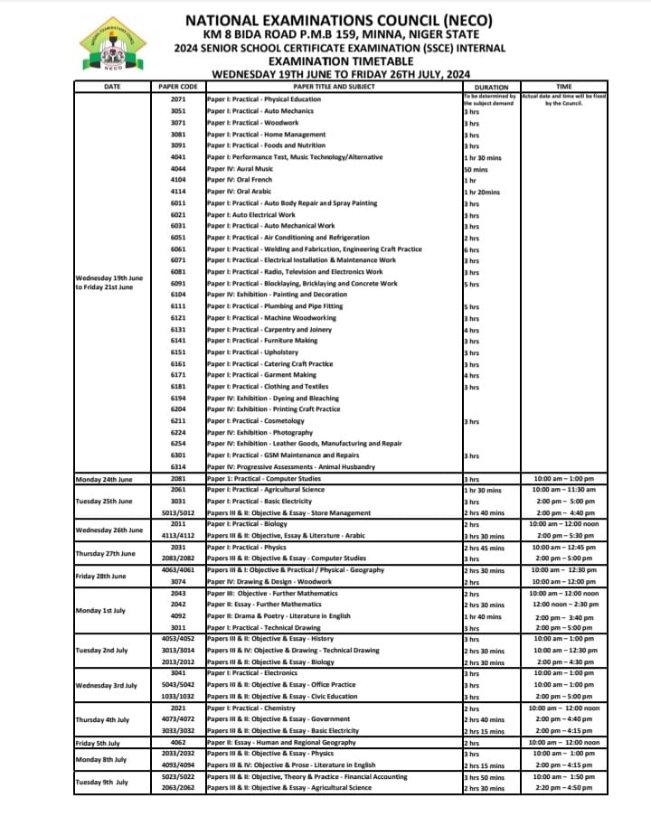
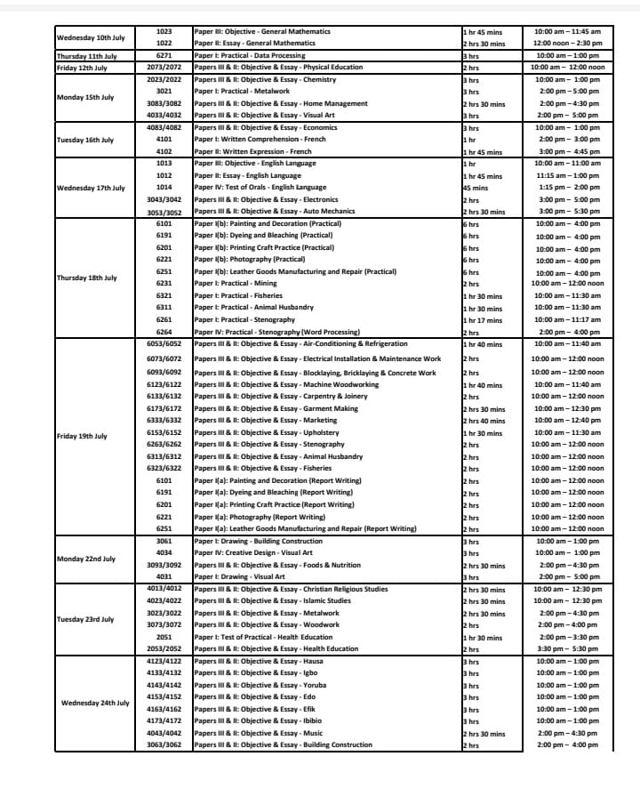
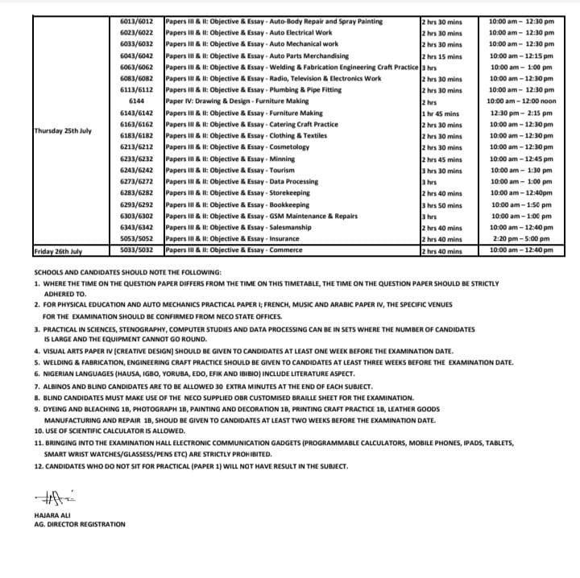

Meet team Success2024@ Examsuccess.ng
2024 NECO Expo | 2024/2025 WAEC RUNZ
2024 NECO QUESTIONS & ANSWERS
Examsuccess.ng as the leading famous examination specialist since 2011, over thousands of Nigeria students made excellent Result from this site Examsuccess.ng Our candidates get their exam questions and answers midnight/7hrs before exam under us... our source remain the best of all when it come to examination assistance specialist...
NOTE: if you are directed here, then use our assistance help desk to avoid any regret in return. We confirmed and verified before distribution.
You don't need to panic, because you wont need to take your phone along with you to examination center. So far our assistance is to be surely delivered midnight before exam.
Do you know that about two million candidates write NECO every year? Out of those two million, less than 40% pass every year.
Let me tell you one truth today,
NECO IS HARD!
Remember, it is different from your school exams where the teachers you know set your questions.
WE HAVE HELPED OVER 100,000 CANDIDATES TO HAVE FANTASTIC AND WONDERFUL RESULTS IN
2011,2012,2013,2014,2015,2016,2017,2018,2019 AND LIKEWISE 2020....
MEAN WHILE 2024 will not be an EXCEPTION AT ALL. BELIEVE ME
SERIOUSLY YOU HAVE NO REASON AT ALL TO WORRY YOURSELF OR EVEN PANIC..
DO YOU KNOW WHY BECAUSE YOU ARE AT THE RIGHT PLACE AND AT THE RIGHT TIME, THANK YOUR STARS THAT YOU FOUND Examsuccess.ng
Do you know that if you are seeking admission
into university or polytechnic, you must have
A/B in your WAEC/NECO/GCE/NABTEB result because
it gives you better chance than those WITH C.
If you really want to have A/B in your results,
make sure you pay for our runz,
that is the only way to secure your admission.
HERE IS AN UPDATED 2024 NECO TIMETABLE


Our 2024 NECO Expo Subscription has started and all interested Candidates for the 2024
For NECO Examination runz expo, you should start subscribing as soon as possible.
WHATS-APP
0907 375 3482
Note: Our NECO RUNS/RUNZ Answers come Midnight/7 hours before the exam (Verified Answers)
Steps to get 2024 NECO QUESTIONS and Answers | 2024 NECO Expo.
But before we discuss further on that I want you to look at the procedures and benefits:
BENEFITS OF PAYMENT BEFORE EXAM:
- You are automatically a VIP.
- You will be registered on our Database where you can confirm your subjects to make sure there is no mistake on your subjects
- You will get special attention from us.
- We can call or text you anytime if any update comes up.
LISTS OF AVAILABLE SUBJECTS FOR 2024 NECO QUESTIONS AND ANSWERS:
Are you ready to pass your exam with A's at one sitting? If your answer is yes, below are the subjects that are available with the subscription fee:
- English
- Mathematics
- Biology
- physics
- Chemistry
- Literature
- Government
- Geography
- Economics
- Commerce
- Accounting
- Agricultural science
- Further Mathematics
- CRS
- Igbo
- Yoruba
- Hausa
NEWLY INTRODUCED SUBJECTS:
- Office Practical
- Marketing
- Insurance
- I.C.T
- Civic Education (Compulsory)
- Data Processing
- Physical Health Education
- Health Science
- Animal Husbandry
- Book Keeping
- Computer Studies
- Health Education
- Available Practicals:
- Agric
- Physics
- Chemistry
- Animal Husbandry
- Biology
NECO 2024/2025 SUBSCRIPTION PRICES, SELECT AND MAKE YOUR PAYMENT:
All Science Answers To get all the Science Answers cost: #6,000All Art Answers To get all the Art Answers cost:#5,000
All Commercial Answers To get all the Commercial Answers cost:#5,000
All Subjects (science+Art+Commercial) Password & Link:#15,000
All subjects (science+Art+Commercial) Questions & Answers via Whatsapp:#20,000
School Owners/Principal/webmasters/VIP-All the subjects Answers Cost:#50,000
Per subject Price (Whats app Answers Delivery):#600
Per subject Price (Whats app Answers Delivery):#1000
English Only costs: #1500
Mathematics Only costs:#1500
Means of sending out our Answers is Through
PAYMENT THROUGH BANK:
Chat Us On Whats App for our Account Num: 0907 375 3482Text "I need Bank details"
PAYMENT THROUGH MTN RECHARGE CARD:
SEND THE FOLLOWING TO US ON WHATSAPP: 0907 375 3482 Only(i)MTN - CARD
(ii)AMOUNT PAID
(iii)EXAM NAME
(iv)PHONE NUMBER
(v)SUBJECTS
SEND THE FOLLOWING TO US ON WHATS APP: 0907 375 3482 Only
PAYMENT FOR BULK SUBJECTS, GROUP AND PASSWORD LINK CONTACT US ON WHATSAPP: JOIN GROUP NOW
NOTE: You may see cheaper prices somewhere else, but I bet it with you, you may regret subscribing with them. Can you compare a cheap phone bought from Aboki inside show glass with the expensive original one bought from a phone store? Never!
I believe you don't wish to fail. We also buy this papers with a lot of money. If you go with the cheap people, expect them to send your answers after exam has ended.
HOWEVER, You can always message us on Whats app to negotiate the price. We know the situation of the country, we will reason with you.
Be among Our Yearly Thousands of Successful Candidates this year. Give us a one-time trial and see for yourself!
100% Refund Of Your Money If 2024 NECO Questions & Answers Is Not Delivered/Send To You Midnight Before Exam Time.
100% Assurance And Authentication Of You Getting Your Question And Answers Midnight before exam.
Don't Panic We Never Fail To Our Promise. Give It A Try And Enjoy Our Service.
Once Again Don't Be Deceived By Other Site Or WhatsApp People Or Groups Promising And Telling Stories They will give you Fake Answers.
For Your Own Good Kindly Subscribe To Us For 100% Assurance... Tell Your Friends About Us Examsuccess.ng
Examsuccess.ng No.1 in Africa
FOR MORE ENQUIRIES, CONTACT THE ADMIN VIA WHATSAPP: 0907 375 3482
Examsuccess.ng IS THE NO1 VERIFIED AND TRUSTED EXAM EXPO WEBSITE FOR STUDENTS
Let me give you few reasons why Examsuccess.ng is the only website you should subscribe with.
-
1. REFUND: Nobody on this internet will refund your money after paying them for the exam and you failed. But I promise you, if you are not satisfied with your result after using our runz, Come back for your money!
YOU WON'T EVEN HAVE REASONS TO COME BACK, BECAUSE YOU WILL SURELY PASS! -
2. BEST SOLUTION: Many of these people you see on the internet, like I said earlier, they are secondary school students like you. What kind of solution do you expect from a secondary school student or drop out?
But here at Examsuccess.ng, we employ Examiners, I mean people that actually mark WAEC scripts to solve questions for us, so why won't you have Al's?
- 3. HONESTY: Truth be told, majority of the things you see online out there are lies. People lie to you just for you to give them your money and at the end, fuck you up. Here at Examsuccess.ng, our aim and joy is for you to pass, because I know if you pass, you will be happy to even appreciate us, if you now like you can give us 1 million, lol.
-
4. EARLY ANSWER: No other person in Nigeria delivers earlier than us. If you see questions online before we send it to you, request for your money! Yes I am that confidence, ask for your money and we will refund you.
I can give you 1,000 reasons more why you should trust us, but do I still need to waste your time with that? I guess not.
Subscription ends soon and once it ends, you may have to pay double amount for late subscription.
IF YOU PAY TODAY, YOU WILL ENJOY THE FOLLOWING BONUSES:
- 1. Free career talk: in case you are confused about what you should study in the university or the university you should go, we will guide you and won't leave you till you gain admission.
- 2. Free skill: What next after your exam? The period you will use to stay home before you moving to the university, we shall teach you skills you can be using to make money online. For example, how to design graphics with your phone, how to build website with your phone, even if you wish to also be doing Exam runz we can guide you and link you up.